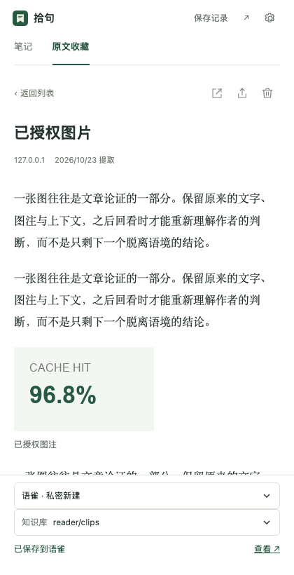
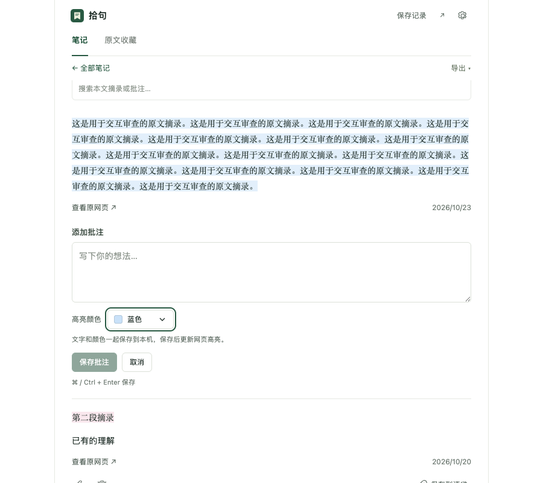
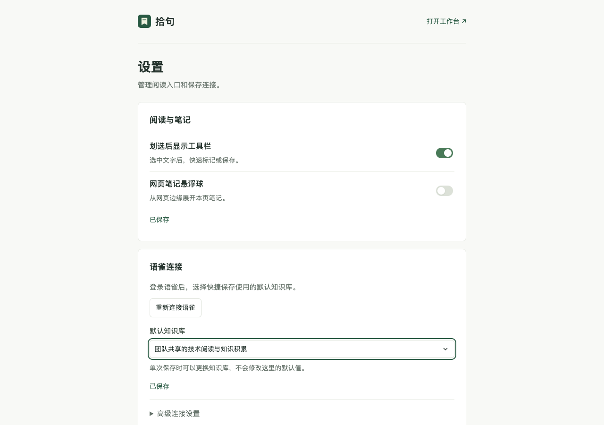

TOOL 02 · 网页剪藏与笔记
拾句 Shiju
把网页上的句子，留在自己的纸上。
在网页上划选摘录，或把整篇文章收进本机。补上笔记， 再主动保存到语雀或飞书。

01 / WHAT IT DOES
读到的，留下来。
不是收藏夹，也不是稍后读。拾句只做一件事： 把你在网页上真正想留下的内容，变成可以回看的本机笔记。
-
01
划选就留下
选中文字，浮窗里直接标记、写笔记，或保存到语雀 / 飞书。
-
02
原文也留下
整篇文章按标题、段落和图片的顺序收进本机；断网也能重新阅读。
-
03
笔记归到网页
同一网页的高亮与批注归在一起，可搜索、继续编辑，草稿不会丢。
-
04
只在你点保存时写入
不会自动上传；语雀和飞书只在主动保存时收到内容。
02 / SCREENS
安静地阅读，安静地记。


03 / INSTALL
装进浏览器，开始拾句。
目前通过开发者模式安装，不上架扩展商店。下载后解压，选择包含
manifest.json 的文件夹。
-
01
下载并解压
下载 shiju-0.10.10.zip， 解压到本地文件夹。
-
02
加载扩展
打开
chrome://extensions或edge://extensions，开启「开发者模式」， 选择「加载已解压的扩展程序」。 -
03
连接保存目标
打开拾句设置，连接语雀并选择知识库；需要飞书时，在高级设置里 填写应用凭证。
-
04
刷新网页
刷新已打开的网页，选中文字开始使用。已有页面需要刷新后才会出现 划选工具栏。
04 / BOUNDARIES
它能做什么，不能做什么。
合适
桌面 Chrome / Edge 116+；普通网页的划选摘录、整页正文与图文收藏、个人笔记。
不合适
OCR、PDF 阅读器、Canvas、关闭的 Shadow DOM、受限的浏览器内部页面。
保存边界
语雀 / 飞书写入需要你自己的账号与权限；单条原句 30,000 字符、笔记 20,000 字符，图片另有数量与体积上限。
数据边界
无后端、无遥测、无远程脚本。配置和本机内容保存在浏览器里；凭据没有额外的应用层加密，不要分享浏览器配置目录。